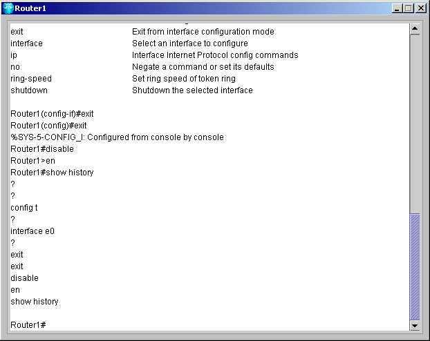
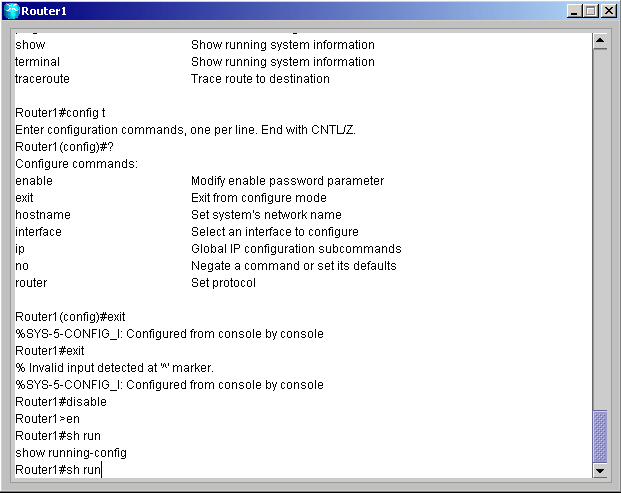

| Help and Editing | ||
|
การทดลองนี้เป็นการทดลองล็อกอินท์เข้าเราเตอร์ที่ต้องการ
โดยเริ่มต้นที่ User EXE level หลังจากนั้นจะทดลองเปลี่ยนโหมดเข้าสู่โหมด Privileged
EXE level และทดลองใช้คำสั่งต่างๆ
|
||
| 1. ล็อกอินเข้าสู่เราเตอร์แล้วเปลี่ยนเป็นโหมด Privileged EXE ด้วยคำสั่ง Enable หรือ En | ||
| 2. เมื่อเข้าสู่ Privileged EXE แล้วให้พิมพ์ access-list 10 permit any แต่อย่าพึ่งกด Enter | ||
| 3. สังเกตว่าขณะนี้เคอเซอร์ชี้อยู่ที่ตำแหน่งท้ายสุดของบรรทัด หลังจากนั้นให้กด Ctrl+A ทำให้เคอเซอร์ย้ายไปอยู่ที่ตัวอักษรตัวแรกของบรรทัด | ||
| 4. กด Ctrl+E ทำให้เคอเซอร์ย้ายไปอยู่ที่ตำแหน่งท้ายสุดของบรรทัด | ||
| 5. กด Ctrl+B ทำให้เคอเซอร์เคลื่อนย้อนตัวอักษรไปทีละตัว | ||
| 6. กด Ctrl+F ทำให้เคอเซอร์เคลื่อนไปทีละตัวอักษร | ||
| 7. กด Ctrl+P เพื่อใช้คำสั่งที่เคยใช้ไปแล้วเช่นเดียวกับการใช้ลูกศรขึ้น | ||
| 8. พิมพ์คำสั่ง Show History เพื่อดูคำสั่งย้อนหลัง 10 คำสั่ง | ||
|
 |
||
| 9. พิมพ์คำสั่ง Terminal no editing แล้วลองทำตามข้อ 3 - 7 สังเกตดูความแตกต่างจากตอนแรก | ||
| 10. พิมพ์คำสั่ง Terminal editing เพื่อ enable ให้สามารถใช้งานได้ตามเดิม | ||
| 11. พิมพ์คำสั่ง sh run แล้วกด Tab เพื่อดูคำสั่งเต็มๆ | ||
|
 |
||
|
สำหรับโหมดการทำงานทั้งหมดของเราเตอร์สามารถดูได้ที่
Command
|
||